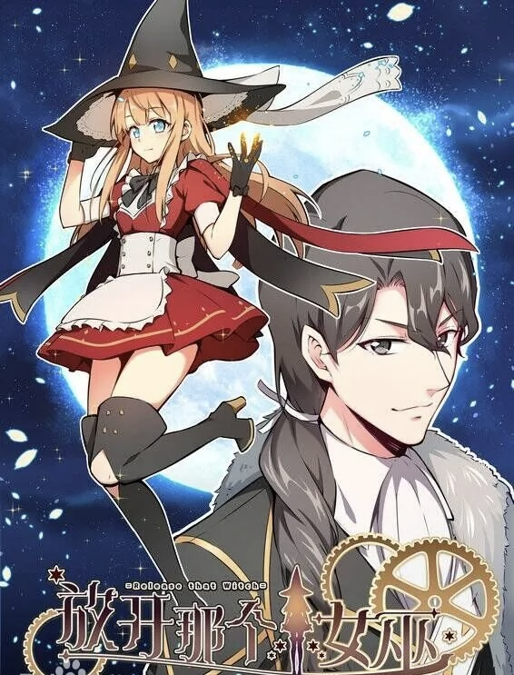

Explore Release That Witch through manga chapters, anime entry points, characters, witches, and story explanations — all from one place.
Release That Witch is a Chinese fantasy series where a modern engineer enters a medieval world and begins transforming it using science, strategy, and the power of witches. Instead of treating magic as decoration, the story turns it into infrastructure, production, and long-term development.

What makes Release That Witch stand out is how it blends world-building, politics, engineering logic, and character-driven storytelling. It’s not just about power or fantasy — it’s about how a world evolves step by step.
The anime version restructures the story for visual storytelling, focusing on pacing, scenes, and dramatic flow. The manga is more direct and faster to read, following a more linear interpretation of the original material.